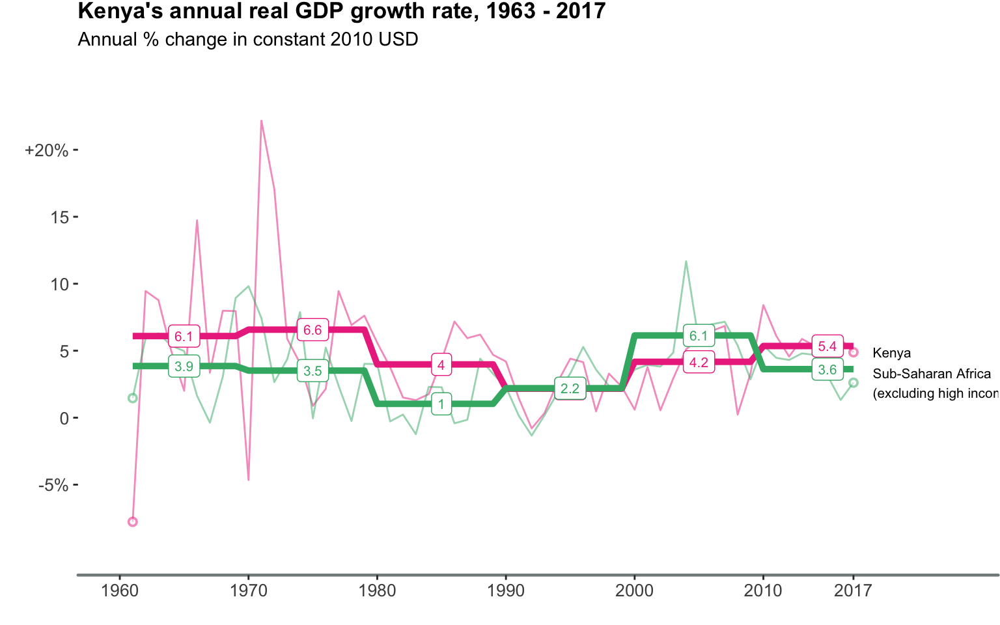
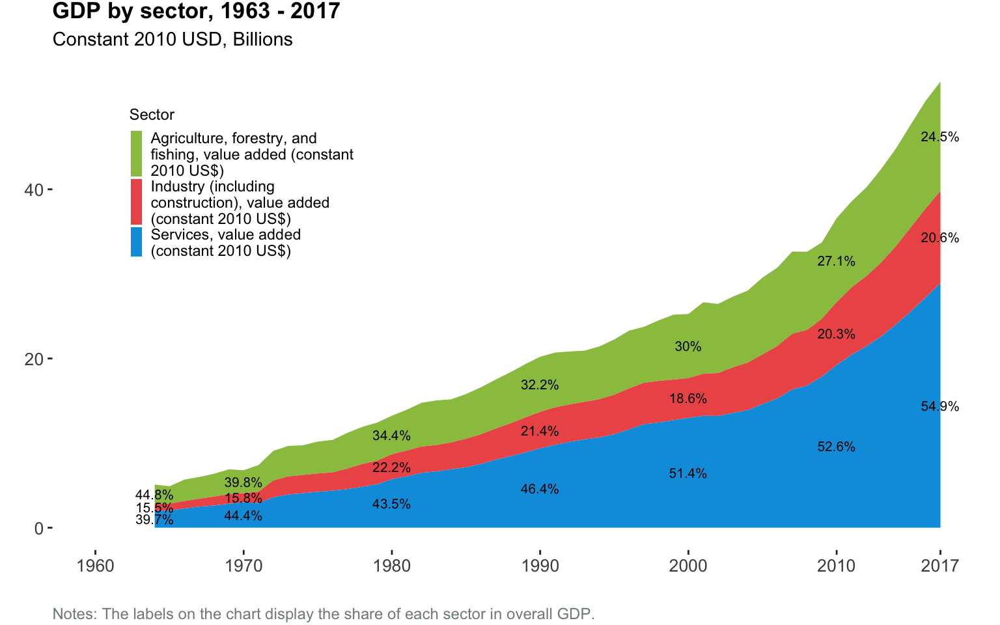
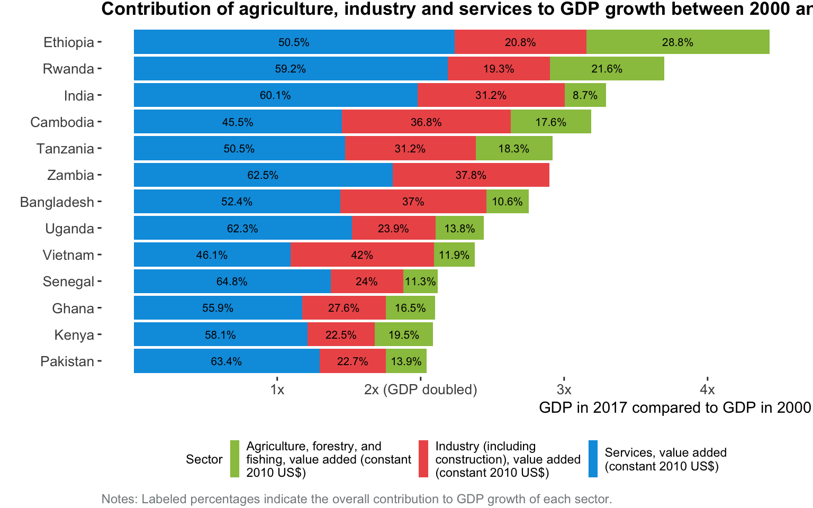
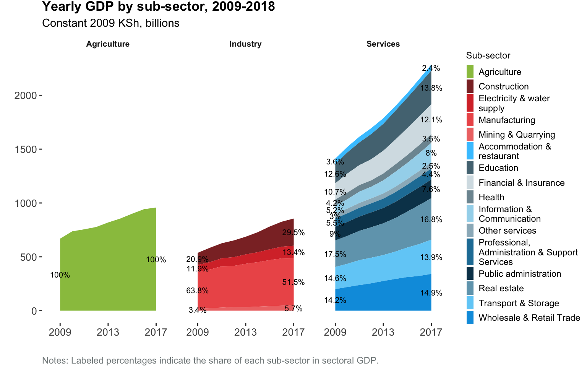
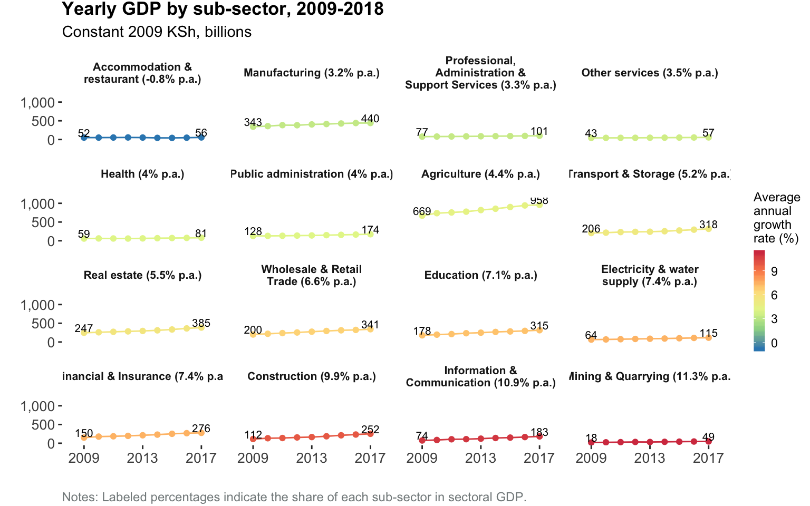
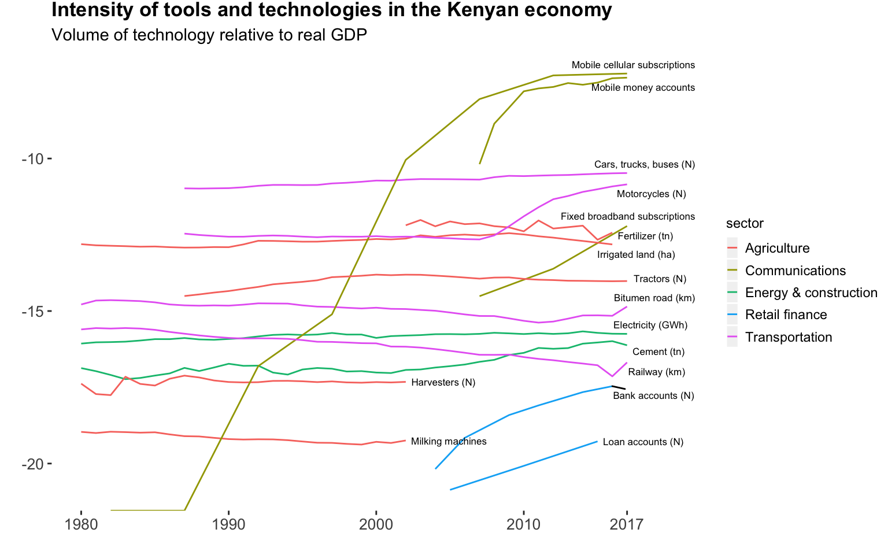
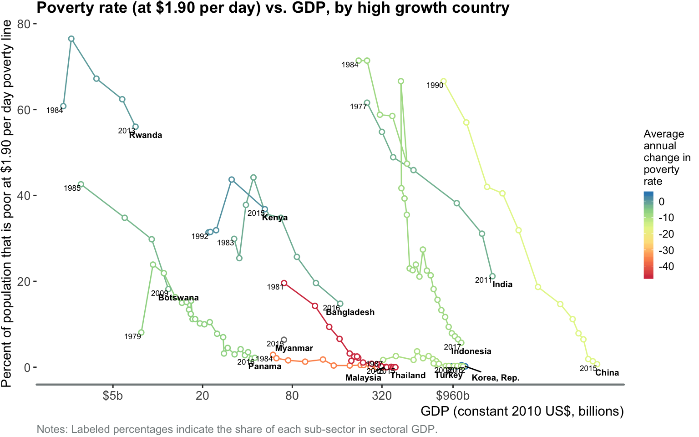

Evidence from macro and micro data
Kenya’s growth story
Introduction
References:
Maddison project database Bolt et al (2018).
The rise and fall of American growth Gordon (2016).
Its not factor accumulation: Stylized facts and growth models Easterly and Levine (2001)
Knowledge or its adoption? Pritchett (2017).
The empirics of growth: An update Bosworth and Collins (2003).
Technology in the great divergence Clark and Feenstra (2001).
If technology has arrived everywhwere, why has income diverged? Comin and Mestieri (2013).
What are the challenges of economic growth Hausmann (2015)
Kenyans have an average living standard today that is about one twentieth of the one enjoyed by Americans (average income per person adjusted for differences in prices is USD 3,285 in Kenya vs. USD 59,531 in the United States). You have to go all the way back to 1855 to find the year in which Americans had an estimated living standard equivalent to the one Kenyans have today (Bolt et al, 2018). As argued by Robert Gordon in his book “The rise and fall of American growth”, America’s growth story begins 15 years later, in 1870. Gordon designates the next 100 years a “special century” for the United States (US), one that brought about an economic revolution that:
freed households from an unremitting daily grind of painful manual labor, household drudgery, darkness, isolation, and early death. Only one hundred years later, daily life had changed beyond recognition. Manual outdoor jobs were replaced by work in air-conditioned environments, housework was increasingly performed by electric appliances, darkness was replaced by light, and isolation was replaced not just by travel, but also by color television images bringing the world into the living room. Most important, a newborn infant could expect to live not to age forty-five, but to age seventy-two.
Driving these transformational changes in welfare were the ideas and inventions that put the US at the cutting-edge of technology and growth. Between 1870 and 1970, the invention and adoption of electricity, the internal combustion engine, public waterworks, modern communication, anesthetics, antibiotics and other chemicals and pharmaceuticals, transformed how things got made and how people’s daily lives unfolded.
In the 65 years since its independence in 1963, Kenya’s purchasing power per person grew at an average rate of 0.67 percent per year, less than half the rate at which livings standards grew in the US during its special century. And unlike the US’s mostly consistent growth, Kenya’s growth trajectory has been unstable and at times stagnant. For most of the 1980s and 90s, average living standards did not progress. Despite acceleration in the growth of average income since 2000, many people’s daily lives in Kenya are shaped by hardship in ways that resemble life in the US in 1870. In 2016, 40 percent of adults reported farming or working as farm day-laborers as their primary income source, about half of households did not have electricity in their home, nearly three quarters used firewood or charcoal for cooking, only 1 in 4 households were connected to a piped water supply and less than 1 in 10 had a flush toilet connected to sewerage.
In one domain, however, a large majority of Kenyans use a frontier technology which has opened up new possibilities. Over three in four adults own a mobile phone, giving them the capability to communicate; and with the innovation of mobile money, transfer funds instantly and affordably. And for businesses, the capability to connect to the internet at high speeds 1 has supported the emergence of a growing digital economy 2. Perhaps no better illustration of this changing technological landscape is Safaricom. With a market capitalziation of USD 20.5 billion (the most valued company on the Nairobi Securities Exchange), Safaricom’s valuation derives directly from its ability to leverage cutting edge communications technologies and infrastructure. Technology spillovers have also benefitted Kenyans in ways that aren’t captured fully in GDP. For example, between 1960 and 2017, with the aid of basic health technologies like bed-nets and antibiotics, under-5 mortality fell from 197 to 46 deaths per 1,000 live births.
But despite improvements in the mobility of financial capital, goods and technology, absolute living standards in Kenya relative to the US are diverging. Between 1963 and 2016 the ratio of gdp per capita (PPP) between the US and Kenya rose from 12 to 17. Kenya is not unique in this regard. Over the long run, living standards between rich and poor nations have diverged. Between 1820 and 1992, the ratio of average incomes between the richest and poorest fifth of countries rose from 6 to 70 (Easterly and Levine, 2001). The emprical observation that rich countries have historically grown faster than poor countries is at odds with the predictions of the earliest growth models which explained the dynamics of growth in terms of the high initial returns that would accrue to poorer countries investing in factors of production (such as machinery, factories and education to raise the skill-level of the workforce) and predicted convergence between countries. These models suggested that a country like Kenya would grow (and “catch-up”" to rich countries) primarily by mobilizing resources from domestic and foreign savings towards investments in physical and human capital. Given a low capital stock (and abundant labor), additional capital investment would produce high returns, generating more output and the resources for additional investment until reaching a steady state where the country needed to use all of its investment resources to maintain or replace depreciated capital stock.
However, in synthesizing the evidence from several growth accounting studies, Easterly and Levine (2001) conclude that ‘when comparing growth experiences across many countries, “something else” – besides factor accumulation – plays a prominent role in explaining differences in economic performance’. That ‘something else’ is total factor productivity (TFP) or the part of output per person growth that is unexplained by growth in physical or human capital 3. Clark and Feenstra (2001) expand on this and argue that diverging incomes across countries since 1800 are a result of divergence in the TFP of economies resulting from technology - not an inability to get access to it - but differences in the efficiency in how new technologies are used. Bosworth and Collins (2003) show that between 1960 and 2000, TFP grew significantly more slowly in three developing country regions (Latin America, the Africa and the Middle East) than in industrial countries between 1960 and 2000. More recently, Comin and Mestieri (2017) explore whether the dynamics of technolgy can account for the long run divergence in incomes between countries and look specifically at the relative contribution of the rate at which new technologies arrive in a country and the rate at which technologies diffuse throughout the economy. The authors find that while technology adoption rates are converging (it takes less time today for new technologies to arrive in countries than they did 200 years ago), technology penetration rates have diverged and that these patterns of technology adoption and diffusion account for the majority of cross-country evolution of income growth. It is important to recognize, however, that factor accumulation is not irrelevant for growth everywhere and at all times. Available evidence suggests that factor accumulation, particularly physical capital, played a greater role than TFP in driving the more rapid rates of growth in South and East Asia relative to the industrial countries since 1960 (Pritchett 2017).
Ricardo Hausmann’s work on complexity economics provides a related take on the dynamics of growth. Like others, Hausman attributes differences between rich and poor countries to technology but differentiates technology into tools (such as a mobile phone), codifiable knowledge (such as the computer program that runs the mobile phone’s operating system) and know-how (the tacit knowledge that cannot be easily written down). He argues that while tools and code are quick to move, know-how isn’t and conceptualizes the process of development and growth as the process of incrementally accumulating more know-how and expressing it through production of a more diverse and complex set of products:
In the economic growth process, countries in the developing world do not grow by making more of the same. In fact, more of the same is not the way rich countries grow either. In the process of economic growth, countries change what they do. They change what they’re good at. They evolve their comparative advantage. So while Israel used to export oranges, now they export IPOs of high-tech firms. Turkey used to export olive oil. Now they export cars and electronics. They do this because they acquire new productive capabilities; they acquire know-how and technology that allows them to do more diverse and valuable things. Some industries are better stepping-stones than other industries for this process. So if a country is good at producing tea or at oil extraction, these industries don’t naturally prepare it for the next thing. But there’s a much more parsimonious path if you’re moving from garments, to textiles, to toys, to electronics, and to cars, because each new industry can build on the capabilities that were acquired for the previous industry.
These new lines of research suggest that a key factor in long run growth is the ability of countries to embed and widely diffuse existing technologies and know-how in their economies and use those technologies to expand their productive capabilities. It follows that to understand the historic and potential role of the financial sector in the long run productivity and growth of Kenya’s economy requires understanding (1) the pattern and evolution of technology adoption and diffusion in Kenya (i.e. what technologies have changed the economic possibilities for households and businesses) and (2) the links between finance and the process of technology adoption and diffusion. Has the financial sector enabled or hindered the aggregate acquisition of know-how and production capabilities in the past? How might the financial sector support the creation of new production capabilities among different sectors of the economy in the future? A further line of inquiry has to do with the distributional impacts of Kenya’s growth dynamics: are they creating economic opportunities for the majority of Kenyans with livelihoods characterized by either poverty, vulnerability or both? Are the technological changes in Kenya’s economy creating demand for low-skilled labor?
An observation made in the sections that follow is that while most of the fundamental tools and technologies of the late 19th and early 20th century were slowly adopted in Kenya, very few diffused rapidly or widely. And while many of the advanced technologies of the 21st century in transportation, healthcare, electronics and energy are now available in Kenya, only a narrow subset of them - particularly consumer technologies in ICT - have been embedded throughout the economy in households and businesses. A natural question that follows is: what are the conditions that allowed certain technologies to take off in Kenya? What was the role of the financial sector in those cases and what kinds of capabilities and opportunities are those technologies enabling for individuals and businesses?
This note proceeds as follows. It first describes different facets of Kenya’s economic growth, complexity and technology landscape using publicly available data with a focus on their evolution in the past 20-30 years and contrasts Kenya’s experience with of a group of comparison countries. Secondly, it looks at changes in the financial sector and examines the links between the financial sector, real sector growth and technological change.
Growth velocity
Figures:
Figure 1
Figure 2
Figure 3
Figure 4
Figure 5
References:
2018 African Economic Outlook: Kenya country note
Since its independence in 1963, Kenya’s economic performance has been uneven (Figure 1) and its growth has been punctured by volatility, evidence of Kenya’s vulnerability to external and domestic shocks - importantly its continued dependence on under-capitalized, rain-fed agriculture. The economy has not sustained a growth rate of greater than 5 percent per year for more than 4 years. For Kenya to reach upper middle income status by 2030 will require GDP growth of about 7 percent per year. Historically, Kenya has achieved more than 7 percent growth in only 4 years.
Countries that transformed average living standards for their populations in the span of a generation were able to sustain high - but not necessarily double digit - growth over long periods (Figure 2). Thailand for example sustained a spell of growth of over 4 percent per year during the 1960s, 70s and 80s - its income per capita rose from USD 571 in 1960 to USD 2,283 in 1989. Even more impressive was Korea’s transformation from a low to a high income country in the 40 years between 1960 and 2000, wherein income per capita increased by a factor of 16 from USD 944 to USD 15,104. Economic transformation during this period wasn’t limited to Asian countries, in Sub-Saharan Africa, Botswana lifted average incomes from USD 391 in 1960 to USD 3,718 in 1990, becoming an upper middle income country in the span of 30 years.
By contrast, the Kenyan economy hasn’t meaningfully lifted average living standards until recently. There was a modest improvement in the period shortly after independence when GDP per capita rose from USD 538 in 1960 to USD 820 in 1974, but for the rest of the period, average living standards were stagnant and even declined in the 1990s (Figure 3). Kenya’s economy began to shift gears in 2003 when GDP growth rates reach into the 5 and 6 percent per year range and, by outpacing population growth, begin to pull up output per capita around 2007 to its current level of USD 1,169.
Despite the fact that Kenya has been growing at an average rate of 4.9 percent per year since 2000, its growth has been slow compared to a group of 13 regional and global peers with similar GDP per capita in 2000 (Figure 4). Between 2000 and 2017, most of its regional neighbors grew faster, for example Ethiopia grew at an average rate of 9.5 percent per year, Rwanda at 7.3 percent and Uganda and Tanzania at 6.5 percent. From this perspective East Africa’s largest economy is under-performing and has been hobbled by domestic shocks - such as the wave of violence that followed the 2007 elections and more recently drought, as well as international shocks.
A similar picture emerges looking at the evolution of GDP per capita since 2000. Among its peers, only Senegal and Pakistan had slower rates of GDP per capita growth. India and Vietnam - who were poorer than Kenya in 2000 in per-capita terms - are now 60% richer. Other countries - such as Cambodia and Bangladesh have closed the gap with Kenya, despite being significantly poorer than Kenya in 2000.
Sectoral and demand side origins of recent growth
Figures:
Figure 6
Figure 7
Figure 8
Figure 9
Figure 10
Figure 11
Figure 12
Industrialization - the process by which the profile of country’s economic output shifts away from agriculture towards manufacturing and other industrial activities and then later towards services - characterized the development trajectory of Europe, North America and successful countries in Asia (such as Japan, China, Taiwan and Korea). Kenya’s growth since 1960 has not followed this path, though agriculture has declined in importance in both output, and to a lesser degree, employment.
In 1960, agriculture made up 44 percent of GDP. By 2017, its share declined by almost half to 25 percent of GDP with the services sector increasing in importance to 55 percent of Kenya’s domestic output. While industry grew in importance in the 1970’s (rising from 15 to 22 percent of GDP between 1970 and 1980) its share has remained more or less constant since then, with manufacturing’s share in GDP also remaining constant at 11 percent.
Similar to the experience of many of its peer countries, the services sector has accounted for much of Kenya’s recent growth (Figure 7). Between 2000 and 2017, Kenya’s GDP doubled and services accounted for 58 percent of this expansion. Services also contributed to more than 55 percent of growth in Rwanda, India, Zambia, Uganda, Senegal, Ghana and Pakistan. The contribution of industry to Kenya’s growth, however, was only 22.5 percent betwen 2000 and 2017. In contrast industry contributed more than 35 percent of GDP growth in Vietnam, Bangladesh, Cambodia and Zambia.
In the 1990s and 2000s, annual growth in services averaged 3.5 percent. In the 8 years since the start of 2010, average annual growth jumped to 5.8 percent. Driving this recent acceleration has been the information and communicaitons sub-sector (+10.9 percent per year on average since 2009), finance and insurance (+7.4 percent per year), education (+7.1 percent per year) and wholesale and retail trade (+6.5 percent per year). Between 2009 and 2017, the share of service sector GDP originating from the information and communication subsector increased from 5.2 to 8 percent, while the share originating from financial services increased from 10.7 to 12.1 percent.
The rate of growth in industry has also accelerated. In the 1990s industrial activity (as measured by GDP) increased by only 1.5 percent per year on average, in the 2000s it increased to 4.3 percent and since 2010, industry has been growing by 5.6 percent per year. The primary driver of industrial growth since 2009 has been construction, which grew at an average rate of 9.9 percent per year, increasing its share of industry sector GDP from 20 percent in 2009 to 29 percent in 2017. And while small in overall size, mining and quarrying increased at an average annual rate of 11.3 percent per year increasing its contribution to industrial GDP from 3.4 to 5.7%. This expansion has been driven in large part by the Kwale Mineral Sands Titanium mining project run by Base Resources. Titanium ore exports commenced in late 2013 and now account for over half of Kenya’s mineral exports 4. The electricity and water sector also grew rapidly at 7.4 percent per year, while manufacturing grew at 3.2 percent per year with its contribution to industrial GDP falling from 63.8 to 51.5 percent.
Technology and economic complexity
Figure 14 shows the relative intensity of a set of 16 technologies and tools in Kenya’s economy between 1980 and 2017. Of these, the majority more or less remained at the same level of intensity relative to the size of the economy while seven increased markedly over this time period: Mobile cellular subscriptions, mobile money accounts, fixed broadband subscriptions, bank accounts, loan accounts and motorcycles. Notably, production technologies in agriculture including fertilizer consumption, irrigated land, tractors and harvesters have not risen in intensity.
Key transportation infrastucture such as the railway network and paved road have also not diffused widely. For example, the Uganda railway 5 completed in 1901 came almost 100 years after the the world’s first steam powered journey took place, giving Kenya 930 km of track from Mombasa to Kisumu. After the British added several branch lines and links to Tanzania and Uganda throughout the 1920s, 30s and 40s, by the time of Kenya’s independence, the total system had about 2,700km of track which remained unchanged through 2016.
While relatively old production and infrastructure technologies have not diffused significantly in Kenya, there is one recent exception: the internal combustion engine. Between 2006 and 2007, new registrations of motorcylces more than doubled from 6,250 to 16,293. In 2008, new registrations tripled to 51,412 and in 2017, 191,501 motorcylces were newly registered. The total stock of motorcycles is now approaching the total stock of all other motor vehicles combined. Several factors appear to have supported the spread of motorcyles: (1) In 2007, low cost, imported motorbikes were made more affordable by the government’s exemption of models with engines below 250cc from a 16 percent value added tax, (2) decades of under-investment in road infrastructure and lack of public transport created significant latent demand for transportation services in a context of a growing and more dynamic economy, and (3) availability of financing through SACCOs, savings groups and other informal loans that enabled lower income Kenyans to raise funds for up-front purchase. While it is not yet clear what social and economic ripple effects are being caused by the proliferation of motorbikes, the cumulative impact is likely very significant:
“We are so many of us and more are still coming into the sector but I cannot complain because the machines have offered me and others a job I could not get elsewhere,” said Moses Otanga, a motorcylce operator in Kitengela, a suburb on the outskirts of Nairobi. [Excerpt from “Kenya’s motorbike economy roars as imports hit new high”] (http://www.xinhuanet.com/english/2017-10/10/c_136670066.htm)
“We promote the 24-hour economy. We are the people who ferry many home even past midnight enabling them to work as long as they want without worrying about how to get home. We operate long after the passenger service vehicles have gone home.” - Kenya Boda Boda association. [Excerpt from “Kenya’s motorbike economy roars as imports hit new high”] (http://www.xinhuanet.com/english/2017-10/10/c_136670066.htm)
“When I heard about BUCOMOT (Bungoma County Motorbike Sacco Ltd), I sold my cow and joined the SACCO,” he told me in his place of business. This enabled him to access a loan that enabled him to buy his motor-bike. Boniface is now the proud owner of his own motorbike. He tells me that owning the motor bike has brought a lot of social and financial difference in his life. He has been able to educate his daughter up to form four, something that he says would have been impossible without his motor-bike. His wife now uses most of her time to tend to their farm and animals, unlike previously when she had to fend for the whole family, and also cater for the medical bills. [Excerpt from “Chinese motorcycles in Kenya: A pass out of poverty?”] (http://africachinareporting.co.za/2016/06/chinese-motorcycles-in-kenya-a-pass-out-of-poverty/)
In 2017 Honda launched Kenya’s first motorcycle manufacturing facility 6, several other firms including Yamaha and Bajaj have established distribution centers, and the large demand for motorbike-enabled transportation services is attracting manufacturing and software start-ups like the Dutch Kibo bike and GetBoda - a motorcylce courier service. So apart from the direct benefits from the presumably positive average return accruing to individuals investing in motorbikes and offering transportation services with them, the indirect spillovers from the knoweledge, know-how and skill transfer resulting from increased manufacturing activity by both established motor-vehicle firms and innovative start-ups could be even more significant in the long run.
In rural villages or even in the slums of Nairobi, mobile phones may be the only 21st century technology you will encounter. Handheld mobile phones were invented by Motorola in 1973, the first models were introduced in Kenya around the time the telecommunications sector was liberalized in 1999 and began to take off in the early 2000s. Several reasons account for their proliferation. Firstly, technological advances along with economies of scale in network equipment and handsets in the developed world led to price declines. Additionally, the introduction of pre-paid billing systems lowered service costs by eliminating the need for operators to send bills and collect debts, thus making mobile phones accessible to lower income consumers. Finally, deregulation created a competitive marketplace, further reducing prices and bolstering mobile phone adoption (Economist, 2009).
The spread of low cost mobile phones and network infrastructure behind the remarkable rise of mobile cellular subscriptions from around 7,000 in 2007 to over 40 million in 2017 (Figure 14), enabled new innovations and possibilities. The most obvious example of this is the invention and refinement of mobile money, which saw exponential growth between 2007 and 2015. Apart from benefiting the telecommunications sector, the spillovers from the widespread availability of mobile communications has been particularly important to the efficiency of the financial sector. Banks for example, have successfully turned mobile phones and mobile money into accounts and delivery platforms for loans.
From computer programming to the technical and managerial know-how required to run successful telecommunications operations, it is clear that Kenya’s capabilities and skills in ICT are impressive and have grown significantly in the past 20 years. But how has Kenya’s know how and production capabilities changed more broadly? The Growth Lab at Harvard’s Center for International Development has developed an index of economic complexity to measure the knowledge in a society as expressed in the products it makes. The economic complexity of a country is calculated based on the diversity of exports a country produces and their ubiquity, or the number of the countries able to produce them 7. Globally the economic index ranges from
Between 1995 and 2016, Kenya’s economic complexity did not change significantly over time unlike Vietnam, Uganda and Cambodia (Figure 16) where economic complexity increased significantly. To illustrate why this is the case, Figure 17 shows the ranking of the forty largest exports by value in Kenya and Vietnam in 1995 and 2016. In 1995, four exports accounted for 70 percent of Kenya’s shipments: Transport services, ICT services, travel and tourism services, coffee and tea. In 2016, the same four exports plus finance and insurance, and cut flowers accounted for 70 percent of exports by value. In Vietnam by comparison both the number and composition of exports that accounted for 70 percent of total export value, changed dramatically. For example, Vietnam’s top 5 exports in 1995 were: Crude oil, Coffee, Rice, Crustaceans and Leather footware, in 2016: Transmission components for radios, TV and other electronics, Electronic integrated circuits make the list. While in 1995, 14 goods or services made up 70 percent of exports in Vietnam by 2016 the list more than doubled to 35, with a large number in the category of electronics or machinery.
Employment
Poverty & well-being
Figure 1. Measured in income purchasing power terms, Kenya’s average standard of living today is similar to the US’s in 1855

{kind=link}
Figure 2. The fall, rise and volatility of Kenyan growth after independence

Figure 3. 15 countries were able to sustain more than 25 years of 5% growth since 1960

Figure 4. Compared to a group of global peer countries, the pace of growth of Kenya’s GDP per capita has been slow since 2000

Figure 5. Since 2000, Kenya’s annual GDP growth averaged 4.9 percent per year, can it shift gears to achieve the higher rates fo 6 and 7 percent per year seen among peer countries?
{kind=link}
Figure 6. Between 1964 and 2017, Kenya’s GDP increased by a factor of 10 and the sector with the largest contribution to output shifted from agriculture to services

{kind=link}
Figure 7. Services and industry are the fastest growing sectors of Kenya’s economy
{kind=link}
Figure 8. Like many of its peer countries, Kenya’s services sector has accounted for a dominant majority of its GDP growth since 2000

{kind=link}
Figure 9. Apart from agriculture, Kenya’s five largest sub-sectors are manufacturing, real estate, wholesale and retail trade and education.

{kind=link}
Figure 10. In the past 8 years, Kenya’s hottest sub-sectors have been mining & quarrying, ICT, construction and finance

{kind=link}
Figure 11. While household consumption drives the majority of Kenya’s output, government expenditure and business investment have been growing in importance
{kind=link}
Figure 12. The demand-side contribution to growth in GDP between 2000 and 2017, by country

Figure 13. The demand-side contribution to growth in GDP between 2000 and 2017, by country
{kind=link}
Figure 14. Production technologies and infrastructure from the 20th century have not rapidly diffused through Kenya’s economy, though more recent, 21st century consumer technologies have.

Figure 15. Between 1995 and 2016, Kenya’s economic complexity has remained slightly above average for its level of income. In 2016, the economic complexity of India, Uganda and Vietnam stands way above what you would expect given their income levels.

Figure 16. Kenya’s eocnomic complexity has declined
{kind=link}
Figure 17. With the exception of financial services, Kenya’s exports have not diversified significantly since 1995. Vietnam in contrast, completely transformed its export portfolio away from agricultural commodities to electronics.

Figure 18. The composition of service exports

Figure 19. The composition of merchandise exports

Figure 20. Formal wage jobs, 2000-2017
{kind=link}
Figure 21. Employment & GDP by sector, 2009-2017
{kind=link}
Figure 22. Growth elasticity of poverty
{kind=link}
Figure 23. Poverty

{kind=link}
Figure 24. Poverty

Figure 25. Domestic credit to private sector
{kind=link}
{kind=link}
{kind=link}

TEAMS↩
Start-ups↩
TFP is essentially understood to be an efficiency factor that augments the productivity of factor inputs (capital and labor), however it is also recognized as “a measure of our ignorance”. Some researchers highlight generalized efficiencies such as those enabled by good management or externalities while others highlight factor specific efficiencies such as the poor performance of production workers in low wage countries. Others liken global TFP to the existing set of public knowledge goods and “know how” - or set of blueprints - that enables economic actors to transform inputs into valued outputs.↩
Titanium mining in Kenya: https://www.nation.co.ke/business/Kwale-titanium-miner-nets-Sh5-5-billion/996-4488036-fry4k1/index.html, https://www.standardmedia.co.ke/article/2000104631/kenya-joins-mineral-exporters-as-first-titanium-cargo-leaves-port↩
The Uganda Railway was originally built by the British to provide Uganda with access to the sea. Construction began at Mombasa in 1896 and reached Lake Victoria in 1901.↩
Titanium mining in Kenya: https://www.nation.co.ke/business/Kwale-titanium-miner-nets-Sh5-5-billion/996-4488036-fry4k1/index.html, https://www.standardmedia.co.ke/article/2000104631/kenya-joins-mineral-exporters-as-first-titanium-cargo-leaves-port↩
The Atlas of Economic Complexity glossary: http://atlas.cid.harvard.edu/learn/glossary↩